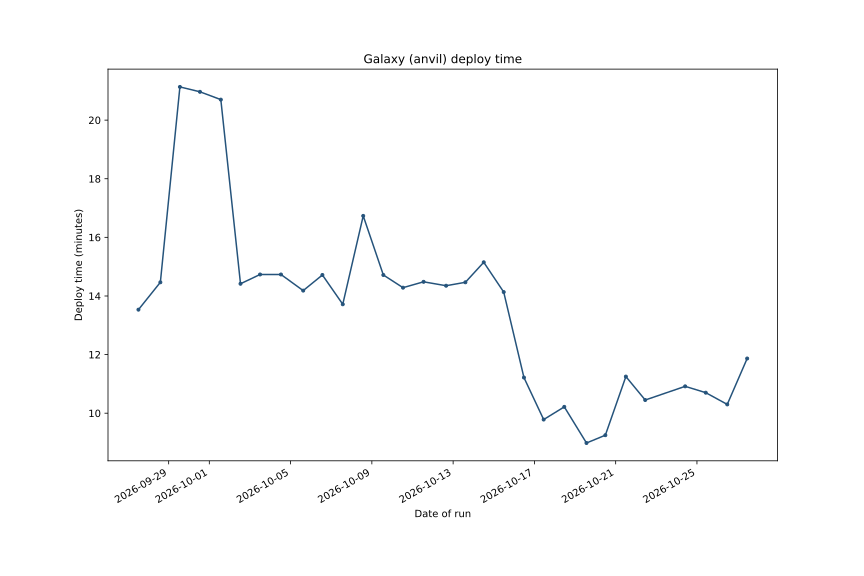

| Date | Status | Duration | Run |
|---|---|---|---|
| Wed Oct 28 11:53:08 2026 | success | 9.2 min | run |
| Tue Oct 27 11:18:54 2026 | success | 11.9 min | run |
| Mon Oct 26 11:47:50 2026 | success | 10.3 min | run |
| Sun Oct 25 10:24:26 2026 | success | 10.7 min | run |
| Sat Oct 24 10:02:50 2026 | success | 10.9 min | run |
| Thu Oct 22 10:53:42 2026 | success | 10.4 min | run |
| Wed Oct 21 12:02:35 2026 | success | 11.2 min | run |
| Tue Oct 20 11:48:30 2026 | success | 9.2 min | run |
| Mon Oct 19 13:30:48 2026 | success | 9.0 min | run |
| Sun Oct 18 11:17:53 2026 | success | 10.2 min | run |
| Sat Oct 17 10:56:04 2026 | success | 9.8 min | run |
| Fri Oct 16 11:38:39 2026 | success | 11.2 min | run |
| Thu Oct 15 11:45:22 2026 | success | 14.1 min | run |
| Wed Oct 14 12:09:26 2026 | success | 15.2 min | run |
| Tue Oct 13 14:28:16 2026 | success | 14.5 min | run |
| Mon Oct 12 15:41:52 2026 | success | 14.3 min | run |
| Sun Oct 11 13:06:35 2026 | success | 14.5 min | run |
| Sat Oct 10 12:48:03 2026 | success | 14.3 min | run |
| Fri Oct 09 13:34:15 2026 | success | 14.7 min | run |
| Thu Oct 08 13:47:59 2026 | success | 16.7 min | run |
| Wed Oct 07 13:38:39 2026 | success | 13.7 min | run |
| Tue Oct 06 13:35:00 2026 | success | 14.7 min | run |
| Mon Oct 05 14:54:23 2026 | success | 14.2 min | run |
| Sun Oct 04 12:37:46 2026 | success | 14.7 min | run |
| Sat Oct 03 11:55:37 2026 | success | 14.7 min | run |
| Fri Oct 02 12:50:43 2026 | success | 14.4 min | run |
| Thu Oct 01 13:36:27 2026 | success | 20.7 min | run |
| Wed Sep 30 12:57:53 2026 | success | 21.0 min | run |
| Tue Sep 29 13:16:03 2026 | success | 21.1 min | run |
| Mon Sep 28 14:11:21 2026 | success | 14.5 min | run |